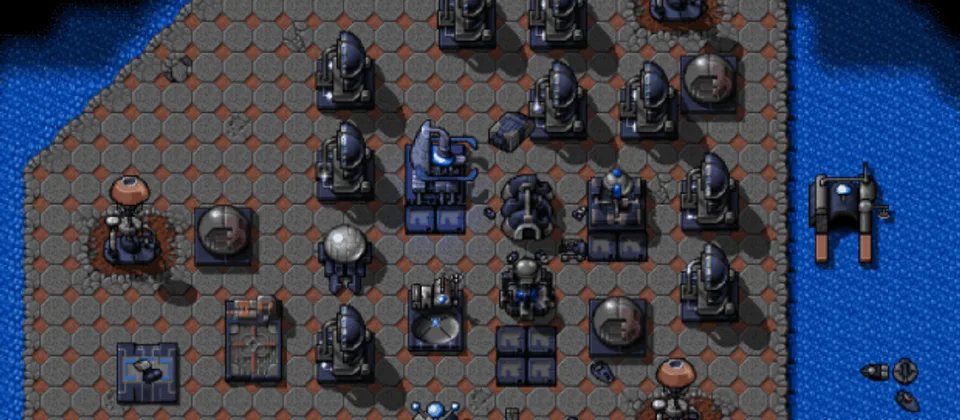

Keep building
Idle factories mean your army falls behind.
OpenHV
OpenHV is an open-source real-time strategy game built on OpenRA.
Download OpenHV
Basics
RTS
Idle factories mean your army falls behind.
Losing harvesters can lose the whole match.
RTS games get easier when commands are quick.